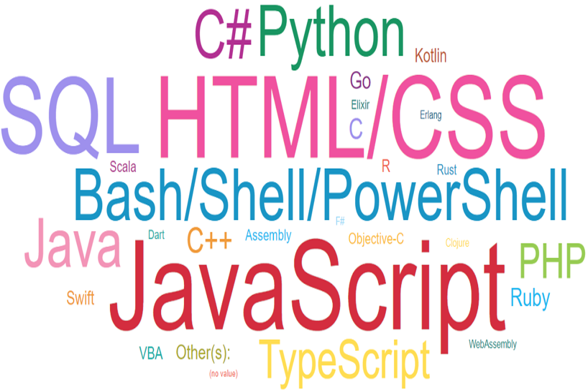

Hi, I'm Young.
Welcome to my portfolio! I am a postdoctoral researcher at Aalto University School of Business in Finland. I am proficient in machine learning, statistics, and data visualization.
Below are some of my data science and analytics projects completed for professional, research, and learning purposes.

K-means clustering was used to determine the "optimal" neighborhood cluster for opening a new café. The criteria used to determine the "optimal" neighborhood cluster was based on a set of business and mathematical assumptions. Neighborhood census and venue data were collected from Tilastokeskus (aka Statistics Finland) and via the Foursquare API, and then cleaned using SQL queries and pandas.
I collected publication data by individual researchers in the Mathematics, Genetics, Applied Psychology, and Mathematical Psychology fields, and then visually compared the productivity distributions by gender using ggplot2. This analysis is based on my PhD dissertation, and a study based on this research was published in Journal of Applied Psychology.

Regression models predicting house sale prices were developed and compared. Model instances with varying polynomial degrees, regularization types (i.e., ridge, lasso, elastic net), and extreme gradient boosting were compared using R2 and RMSE scores. Hyperparameters were tuned using 5-fold cross validation and Bayesian optimization.
A series of classification models predicting loan status were developed and compared. Model instances using k-nearest neighbor, decision tree, support vector machine, logistic regression, and extreme gradient boosting algorithms were compared using F1 scores, Jaccard indices, and log loss. Parameter tuning via cross validation and Bayesian optimization.

Two simple movie recommendation systems were created using (1) content-based filtering, which recommends movies similar in genre as those rated highly by the user, and (2) collaborative filtering, which recommends movies rated highly by other users with similar inputs (i.e., movies watched and rated).

Data collected as part of the 2019 Stack Overflow Annual Developer Survey was analyzed and visualized using SQL, Python and IBM Cognos. Findings yielded numerous insights into developer technology usage, trends, and demographics.
Data on the profits, quantity sold, units recalls, and customer sentiment regarding 5 automobiles distributed by 10 dealers were visualized using Tableau and hosted on Tableau Public. The data files used here were obtained from the IBM Accelerator Catalog.
A plotly dash app visualizing yearly airline performance and delay data from 2005 to 2020 was deployed using Heroku. Data were visualized using a collection of bar, line, pie, choropleth map, and treemap charts.

I used yfinance to extract the Tesla (TSLA) and GameStop (GME) stock data. I also used beautiful soup to scrape revenue data for the two companies.